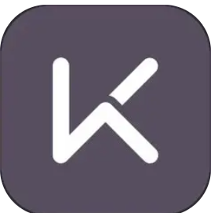

01 · China
Keep
AI 运动教练
Kinetic.ai
定位：从综合训练平台升级为更强调 AI 教练的运动入口。
优势：Keep 现在最值得看的不是课程库本身，而是 `卡卡`、`NRC 跑步教练`、`小柯老师` 组成的多教练 AI 体系。它把陪跑、体测、能力分析和计划生成做成了明确的智能体入口，AI 不再只是点缀，而是主卖点。
短板：很多原本免费可看的内容逐步转到会员后，付费墙感知更强，这是它当前最明显的流失点，也会削弱老用户对平台的好感。
观察：Keep 在 App Store 已直接写成 `AI 运动教练`，而你给的截图也说明它正把 AI 教练切换、语音陪跑和体测计划放到前台。
AI 智能体
卡卡 / 小柯 / NRC
语音陪跑
体测计划
会员墙